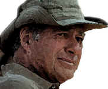

DVD Review Archive
Feature Archive Links DVD MIA DVD
Alerts Movie Posters Laser Site Info Home E-mail
© 2002 Films on Disc Stuart J. Kobak ALL RIGHTS RESERVED.
|
|
|
John Frankenheimer (1930-2002)
 John Frankenheimer directed two of the best lean political thrillers ever filmed. The Manchurian Candidate is a quintessential thriller. The clean black and white photography depicts a political assassination, masterful brainwashing sequences, and complex sexual issues. Frankenheimer got the very best from Frank Sinatra as the determined Captain Bennett Marco and an ice-cold Laurence Harvey marching like a marionette on poisoned strings as decorated Korean war hero Raymond Shaw. Angela Lansbury is perfect as the indelible bitch/mother. Will you ever turn over a red queen from a deck of playing cards without thinking of the Manchurian Candidate? Seven Days in May was Frankenheimer's next project, and while perhaps not as flashy as Manchurian Candidate, it's almost more frightening. Burt Lancaster is powerful and popular General James Mattoon Scott campaigning for president against incumbent President Jordan Lyman. But Scott's not willing to take a chance on losing to the liberal Lyman whom he views as a weak sister. Kirk Douglas plays Colonel Jiggs Casey who may be the only person standing between Scott and a military coup. Great stuff, directed with a perfect sense of reality by Frankenheimer.The director had an imperial presence in person. A very tall man with a shock of thick yellow-white hair, Frankenheimer was aware of the stage. He spoke with charged energy using his huge hands like a great conductor, shaping the words musically as they described his passion, filmmaking. Often, Frankenheimer's enthusiasm for a project was infectious and the result is filmmaking at its best. Frankenheimer's final film was the made-for-TV drama The Path to War, starring Michael Gambon as President Lyndon B. Johnson, making the fateful decision of withdrawal or escalation in Vietnam. Appropriately enough, it was on TV dramas that Frankenheimer cut his dramatic teeth with stunning success in the 1950's on shows like Playhouse 90, including the award winning Days of Wine and Roses. When Robert Kennedy was tragically assassinated in 1968,at the Ambassador Hotel in Los Angeles he had been staying as Frankenheimer's house guest. Frankenheimer took the death of his close friend very hard. Did the event lead to a downturn in the director's career? Frankenheimer's move from Hollywood to Europe followed shortly after the horrible night. Did the director of the quintessential political assassination thriller The Manchurian Candidate feel is some way touched by twisted fate? In any event, Frankenheimer's career was an up and down affair in the years that followed and the extraordinary string of cinema successes of early sixties was never repeated, though the director had his moments and for every good film, you felt Frankenheimer was on the way back. His bouts of alcoholism ended in 1981 when he put drink aside.
Along with those twin pillar
thrillers supporting a fine career, Frankenheimer made other memorable
films including, the quiet, introspective Birdman of Alcatraz (1962)
with Burt Lancaster, The Train (1964), an excellent World War II
thinking man's action film, again starring Lancaster, Seconds (1966),
starring Rock Hudson in what might best be described as a chilling
extended Twilight Zone episode. Black Sunday (1977) is a
thriller about a terrorist attack on the Super Bowl, especially chilling
in light of recent events. Robert Shaw is excellent as the Israeli agent
and Bruce Dern is perfectly cast as the Vietnam-veteran with a loose
screw. The Gypsy Moths (1969), seeing video for the first
time on DVD in September, stars Burt Lancaster and Gene Hackman as
daredevil skydivers. Click on thumbnails for larger images.
|
DVDRAMA |